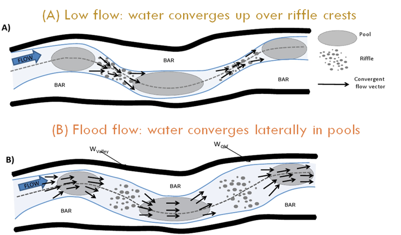
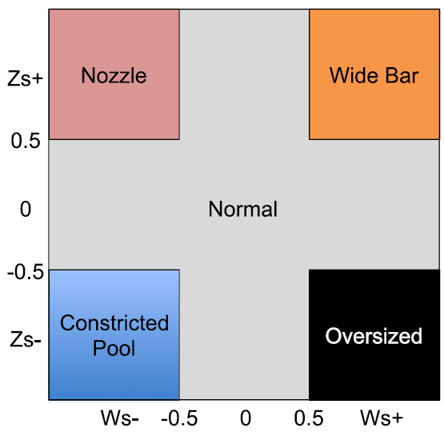
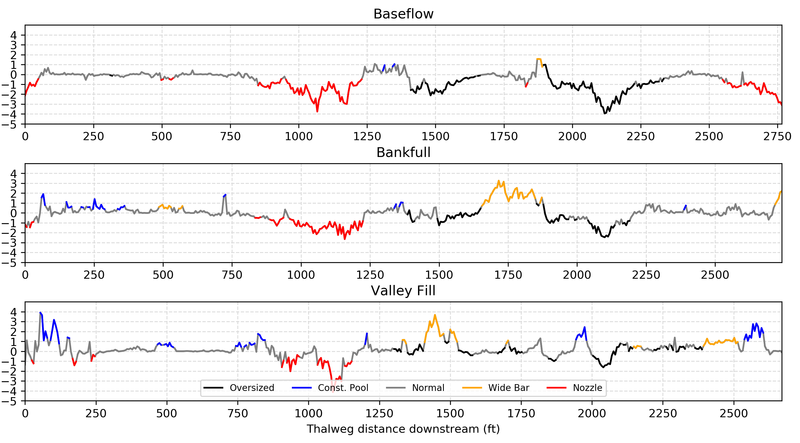

Background geomorphology¶
The Geomorphic Covariance Structure (GCS) analysis enabled by this software package is conceptually supported by a variety of recent fluvial geomorphology research. Our methodlogy emerges from the growth of high quality, pubically available remote sensing LiDAR data and faciliates remote analysis of a river's longitudinal topogaphic variability, which has important hydro-morphodynamic implications. So far, GCS analysis has been shown to be highly relevent in river restoration project design and environmental flow prescription contexts.
Before applying GCS analysis to the river of your choice using this GUI, we strongly recomend building some understanding of GCS theory, methodology, and applications.
Geomorphic Covariance Structures (GCS) video lectures¶
This five part video lecture series created by Gregory Pasternack is a good way to get up to speed.
Flashy-ephemeral river GCS analysis (Xavier Nogueira's MS thesis exit seminar)
All videos are roughly 30 minutes.
Flow convergence routing (FCR) theory¶
A river corridor’s topography is largely controlled by hydro-morphodynamic processes driven by temporally variable discharge interacting with spatially heterogeneous fluvial topography (de Almeida and Rodriguez, 2012). The nature of this interaction can vary but has been studied as an assemblage of geomorphic processes that are linked to observed patterns of scouring and deposition (Wyrick & Pasternack, 2016). One such morphodynamic mechanism is ‘flow convergence routing’, which is broadly characterized by significant longitudinal topographic heterogeneity, inundated to various degrees depending on discharge, driving stage-dependent, non-uniform patterns of lateral and vertical flow funneling (i.e. convergence and divergence) resulting in longitudinal patterning of deposition and scour.
According to flow convergence routing theory (Pasternack et al., 2018a), all other things being equal, a small cross-sectional area (i.e., geometric constriction) has a higher potential to scour and route sediment through it due as flow convergence increases cross-sectional velocity. Vice-versa, a large cross-sectional area causes momentum dispersion via flow divergence, increasing deposition potential as velocity drops. Further, the locations of small and large cross-sectional areas changes with stage, because non-uniform river topography is often complex, functioning uniquely over different discharge ranges (Brown et al., 2015). The velocity at any expansion or constriction may or may not become low or high enough, respectively, at a specific discharge to effect sediment deposition or scour, respectively. For low discharge, there could be intense but highly localized scour at a highly constricted “nozzle”, but insufficient sediment transport capacity to route that material further downstream.
Above we have an example of a river where peak flow convergence occurs vertically over riffles at low flow, but lacks sufficient velocity to alter channel morphology. While at a higher flow, flow convergence is predominently controlled by channel width constrictions and are associaed with topographic low points / pools.
Geomorphic Covariance Structures (GCS) and FCR landforms¶
The GCS between a river’s standardized width (Ws) and standardized, detrended bed elevation (Zs) (an inverse proxy for depth) has been shown to accurately predict the hydrodynamic mechanism involved in flow convergence routing (Pasternack et al., 2018b). Specifically, ceteris paribus, when Ws and Zs are both positive numbers at discharges capable of sediment routing, then flow convergent routing will self-maintain riffle-pool sequencing in an alluvial river. As a result, GCS analysis of a river’s DEM can be used to study flow convergence routing via quantification of Ws and Zs over a range of discharges. Because GCS analysis can done with only a DEM as an input (Pasternack et al., 2021), without numerical modeling or reliance on discharge-stage gage data, it is possible to study remote fluvial topographies that are less impacted by human alterations (Wohl, 2019). Incidentally, the same GCS has been found to be an important control on river hyporheic hange rates (Mohadevi et al., 2021) , so the methodology is relevant beyond just morphodynamics.
As described, at a discharge capable of altering channel morphology, flow convergence routing theory expects low bed elevation (negative Zs) to be associated with relative width constrictions (negative Ws). In addition, relative width divergences (positive Ws) would be expected to dissipate flow momentum prompting sediment deposition and elevating bed elevation (positive Zs). In both cases, FCR theory expects Ws and Zs values to have positive covariance, C(Ws, Zs) > 0, at morphodynamically relevant discharges / stages.
One way GCS series can be explicitly associated with channel morphology is via the use of flow convergence routing landform classifications.
Cross-sections are classified as one of five landforms representing simplified 2-dimensional (Ws, Zs) models of fluvial geometry. If either Ws or Zs has an absolute value less than 0.5, meaning neither width or relative bed elevation isn't more than half a standard deviation from river segment mean, the cross-section is classified as normal. In all other cases, where both abs(Ws) and abs(Zs) > 0.5, the cross-section is classified by the sign of Ws and Zs. All possible landform classifications are showed below.
Wide bar and constricted pool landforms, both w/ + C(Ws, Zs), are associated with flow convergence routing theories expecations at a discharge capable of altering channel morphology. In contrast, nozzle and oversized landforms are not expected to self-maintain at high discharges, as the flow convergence or divergence caused by width undulations is posed to reverse the observed relative bed elevation. For example, exposing a high bed elevation but width constricted nozzle to a high flow would be expected to erode the high bed elevation over time as flow convergence increases the cross-sections sediment entrainment rate.
Example: GCS with landform classification¶
Here we have an example, of three C(Ws, Zs) series for increasing discharges (increasing top to bottom). The complete longitudinal GCS series are shown, with cross-section landform classification displayed via color coding.
